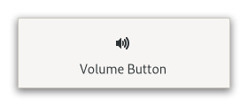

Gtk.VolumeButton¶
Example¶

- Subclasses:
None
Methods¶
- Inherited:
Gtk.ScaleButton (12), Gtk.Widget (183), GObject.Object (37), Gtk.Accessible (18), Gtk.Buildable (1), Gtk.Orientable (2)
- Structs:
class |
|
Virtual Methods¶
Properties¶
Name |
Type |
Flags |
Short Description |
|---|---|---|---|
r/w/c/en |
|
Signals¶
- Inherited:
Fields¶
- Inherited:
Name |
Type |
Access |
Description |
|---|---|---|---|
parent |
r |
Class Details¶
- class Gtk.VolumeButton(**kwargs)¶
- Bases:
- Abstract:
No
GtkVolumeButtonis aGtkScaleButtonsubclass tailored for volume control.<picture> <source srcset=”volumebutton-dark.png” media=”(prefers-color-scheme: dark)”> <img alt=”An example
Gtk.VolumeButton" src=”volumebutton.png”> </picture>Deprecated since version 4.10: This widget will be removed in GTK 5
- classmethod new()[source]¶
- Returns:
a new
GtkVolumeButton- Return type:
Creates a
GtkVolumeButton.The button has a range between 0.0 and 1.0, with a stepping of 0.02. Volume values can be obtained and modified using the functions from [class`Gtk`.ScaleButton].
Deprecated since version 4.10: This widget will be removed in GTK 5
Property Details¶
- Gtk.VolumeButton.props.use_symbolic¶
- Name:
use-symbolic- Type:
- Default Value:
- Flags:
Whether to use symbolic icons as the icons.
Note that if the symbolic icons are not available in your installed theme, then the normal (potentially colorful) icons will be used.
Deprecated since version 4.10: This widget will be removed in GTK 5